library(tidyverse)Regressão Linear
Carregando bibliotecas
Dados de propaganda
O conjunto de dados contém estatísticas sobre as vendas de um produto em 200 diferentes mercados, juntamente com orçamentos publicitários em cada um desses mercados, para diferentes canais de mídia: TV, rádio e jornal. As vendas estão em milhares de unidades e o orçamento está em milhares de dólares.
library(readxl)
propaganda <- read_excel("Propaganda.xlsx")
summary(propaganda) TV Radio Newspaper Sales
Min. : 0.70 Min. : 0.000 Min. : 0.30 Min. : 1.60
1st Qu.: 74.38 1st Qu.: 9.975 1st Qu.: 12.75 1st Qu.:10.38
Median :149.75 Median :22.900 Median : 25.75 Median :12.90
Mean :147.04 Mean :23.264 Mean : 30.55 Mean :14.02
3rd Qu.:218.82 3rd Qu.:36.525 3rd Qu.: 45.10 3rd Qu.:17.40
Max. :296.40 Max. :49.600 Max. :114.00 Max. :27.00 Renomeando
propaganda <- propaganda %>% rename(Jornal = Newspaper, Vendas = Sales)Sumario
summary(propaganda) TV Radio Jornal Vendas
Min. : 0.70 Min. : 0.000 Min. : 0.30 Min. : 1.60
1st Qu.: 74.38 1st Qu.: 9.975 1st Qu.: 12.75 1st Qu.:10.38
Median :149.75 Median :22.900 Median : 25.75 Median :12.90
Mean :147.04 Mean :23.264 Mean : 30.55 Mean :14.02
3rd Qu.:218.82 3rd Qu.:36.525 3rd Qu.: 45.10 3rd Qu.:17.40
Max. :296.40 Max. :49.600 Max. :114.00 Max. :27.00 nrow(propaganda)[1] 200Linhas inicias
library(gt)
gt(head(propaganda, 10))| TV | Radio | Jornal | Vendas |
|---|---|---|---|
| 230.1 | 37.8 | 69.2 | 22.1 |
| 44.5 | 39.3 | 45.1 | 10.4 |
| 17.2 | 45.9 | 69.3 | 9.3 |
| 151.5 | 41.3 | 58.5 | 18.5 |
| 180.8 | 10.8 | 58.4 | 12.9 |
| 8.7 | 48.9 | 75.0 | 7.2 |
| 57.5 | 32.8 | 23.5 | 11.8 |
| 120.2 | 19.6 | 11.6 | 13.2 |
| 8.6 | 2.1 | 1.0 | 4.8 |
| 199.8 | 2.6 | 21.2 | 10.6 |
Criando amostra de treino e teste
library(caret)
set.seed(21)
y <- propaganda$Vendas
indice_teste <- createDataPartition(y, times = 1, p = 0.40, list = FALSE)
conj_treino <- propaganda %>% slice(-indice_teste)
conj_teste <- propaganda %>% slice(indice_teste)
str(conj_treino)tibble [119 × 4] (S3: tbl_df/tbl/data.frame)
$ TV : num [1:119] 230.1 151.5 180.8 199.8 66.1 ...
$ Radio : num [1:119] 37.8 41.3 10.8 2.6 5.8 35.1 7.6 47.7 20.5 23.9 ...
$ Jornal: num [1:119] 69.2 58.5 58.4 21.2 24.2 65.9 7.2 52.9 18.3 19.1 ...
$ Vendas: num [1:119] 22.1 18.5 12.9 10.6 8.6 9.2 9.7 22.4 11.3 14.6 ...str(conj_teste)tibble [81 × 4] (S3: tbl_df/tbl/data.frame)
$ TV : num [1:81] 44.5 17.2 8.7 57.5 120.2 ...
$ Radio : num [1:81] 39.3 45.9 48.9 32.8 19.6 2.1 24 32.9 36.6 39.6 ...
$ Jornal: num [1:81] 45.1 69.3 75 23.5 11.6 1 4 46 114 55.8 ...
$ Vendas: num [1:81] 10.4 9.3 7.2 11.8 13.2 4.8 17.4 19 12.5 24.4 ...gt::gt(head(conj_treino, 10))| TV | Radio | Jornal | Vendas |
|---|---|---|---|
| 230.1 | 37.8 | 69.2 | 22.1 |
| 151.5 | 41.3 | 58.5 | 18.5 |
| 180.8 | 10.8 | 58.4 | 12.9 |
| 199.8 | 2.6 | 21.2 | 10.6 |
| 66.1 | 5.8 | 24.2 | 8.6 |
| 23.8 | 35.1 | 65.9 | 9.2 |
| 97.5 | 7.6 | 7.2 | 9.7 |
| 195.4 | 47.7 | 52.9 | 22.4 |
| 69.2 | 20.5 | 18.3 | 11.3 |
| 147.3 | 23.9 | 19.1 | 14.6 |
Primeira visualização dos dados
Aqui estou usando uma função do pacote caret que de uma maneira simples apresenta a relação entre a variável resposta e suas possíveis variáveis explicativas
featurePlot(x = conj_treino[ , c("TV", "Radio", "Jornal")], y = conj_treino$Vendas)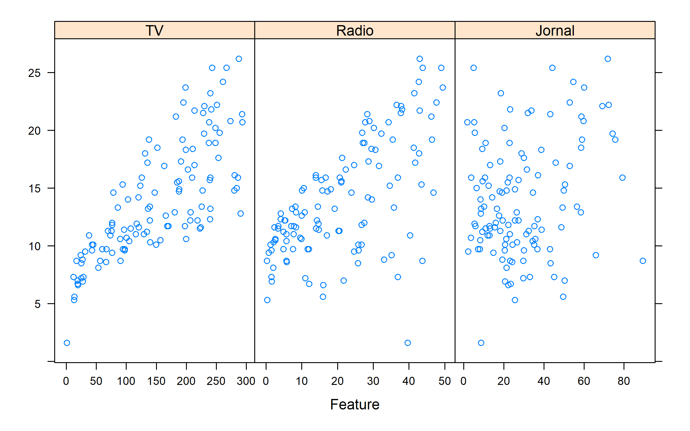
Usando o ggplot
gt(head(conj_treino, 10))| TV | Radio | Jornal | Vendas |
|---|---|---|---|
| 230.1 | 37.8 | 69.2 | 22.1 |
| 151.5 | 41.3 | 58.5 | 18.5 |
| 180.8 | 10.8 | 58.4 | 12.9 |
| 199.8 | 2.6 | 21.2 | 10.6 |
| 66.1 | 5.8 | 24.2 | 8.6 |
| 23.8 | 35.1 | 65.9 | 9.2 |
| 97.5 | 7.6 | 7.2 | 9.7 |
| 195.4 | 47.7 | 52.9 | 22.4 |
| 69.2 | 20.5 | 18.3 | 11.3 |
| 147.3 | 23.9 | 19.1 | 14.6 |
c_treino_pivot <- conj_treino %>% pivot_longer(!Vendas, names_to="Tipo", values_to="Orçamento" )
gt(head(c_treino_pivot, 10))| Vendas | Tipo | Orçamento |
|---|---|---|
| 22.1 | TV | 230.1 |
| 22.1 | Radio | 37.8 |
| 22.1 | Jornal | 69.2 |
| 18.5 | TV | 151.5 |
| 18.5 | Radio | 41.3 |
| 18.5 | Jornal | 58.5 |
| 12.9 | TV | 180.8 |
| 12.9 | Radio | 10.8 |
| 12.9 | Jornal | 58.4 |
| 10.6 | TV | 199.8 |
conj_treino %>% pivot_longer(!Vendas, names_to="Tipo", values_to="Orçamento" ) %>%
ggplot() +
geom_point(aes(x=Orçamento, y=Vendas)) +
facet_wrap( ~ Tipo, scales = "free_x") +
labs(x = "Orçamento (1000 US$)",
y = "Vendas (em 1000 unidades vendidas)",
title = "Vendas vs Propaganda"
) 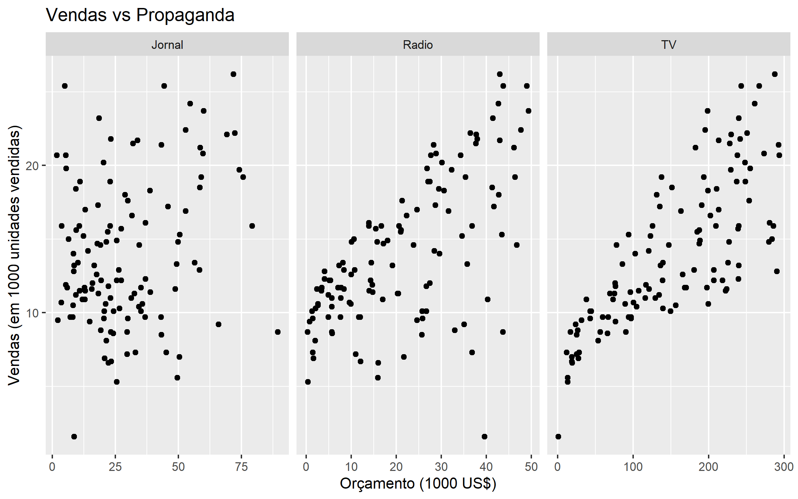
Matriz de dispersão
library(psych)
pairs.panels(conj_treino,
method = "pearson", # metodo de correlação
hist.col = "#00AFBB",
density = TRUE, # mostra graficos de densidade
ellipses = FALSE # mostra elipses de correlação
)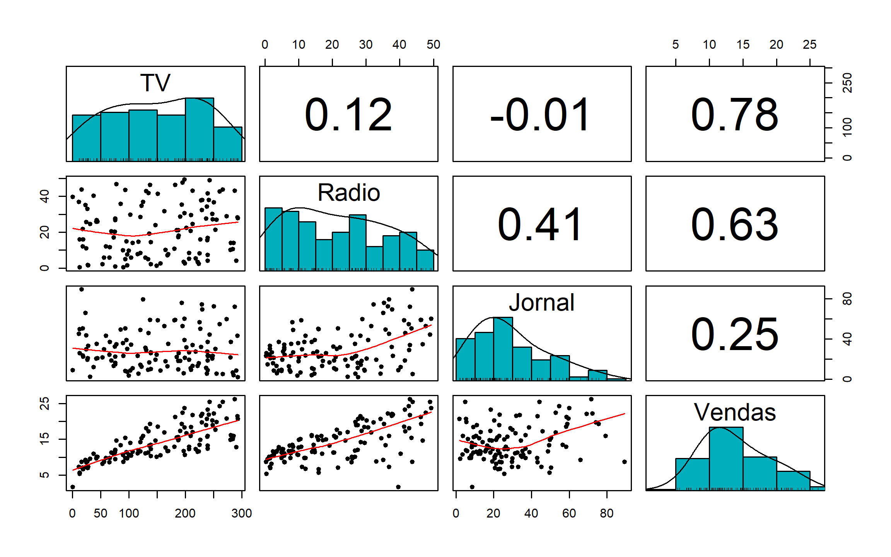
1o Mod Regressão
mod1 <- lm( Vendas ~ TV, data = conj_treino)
names(mod1) [1] "coefficients" "residuals" "effects" "rank"
[5] "fitted.values" "assign" "qr" "df.residual"
[9] "xlevels" "call" "terms" "model" coeflinear <- mod1$coefficients[1]
coefang <- mod1$coefficients[2]
summary(mod1)
Call:
lm(formula = Vendas ~ TV, data = conj_treino)
Residuals:
Min 1Q Median 3Q Max
-7.6383 -1.9426 -0.0565 1.7033 7.5277
Coefficients:
Estimate Std. Error t value Pr(>|t|)
(Intercept) 6.929269 0.598642 11.57 <2e-16 ***
TV 0.046471 0.003471 13.39 <2e-16 ***
---
Signif. codes: 0 '***' 0.001 '**' 0.01 '*' 0.05 '.' 0.1 ' ' 1
Residual standard error: 3.167 on 117 degrees of freedom
Multiple R-squared: 0.605, Adjusted R-squared: 0.6017
F-statistic: 179.2 on 1 and 117 DF, p-value: < 2.2e-16ggplot(conj_treino, aes(x=TV, y=Vendas)) +
geom_point() +
geom_abline(slope = coefang,intercept = coeflinear, color="blue" ) +
geom_hline(yintercept=coeflinear, linetype="dashed", color = "red")
Outra forma de representação do 1o Modelo
library(car)
scatterplot(Vendas ~ TV, data = conj_treino, smooth=F, id.n=1)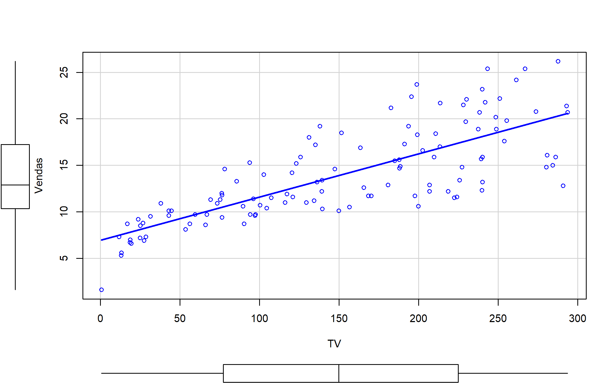
Extraindo informações do 1o ajuste
summary(mod1)$sigma[1] 3.167319summary(mod1)$r.squared[1] 0.605027Intervalo de Confiança
summary(mod1)
Call:
lm(formula = Vendas ~ TV, data = conj_treino)
Residuals:
Min 1Q Median 3Q Max
-7.6383 -1.9426 -0.0565 1.7033 7.5277
Coefficients:
Estimate Std. Error t value Pr(>|t|)
(Intercept) 6.929269 0.598642 11.57 <2e-16 ***
TV 0.046471 0.003471 13.39 <2e-16 ***
---
Signif. codes: 0 '***' 0.001 '**' 0.01 '*' 0.05 '.' 0.1 ' ' 1
Residual standard error: 3.167 on 117 degrees of freedom
Multiple R-squared: 0.605, Adjusted R-squared: 0.6017
F-statistic: 179.2 on 1 and 117 DF, p-value: < 2.2e-16confint(mod1) 2.5 % 97.5 %
(Intercept) 5.74368904 8.11484821
TV 0.03959625 0.05334545Anova
anova(mod1)Analysis of Variance Table
Response: Vendas
Df Sum Sq Mean Sq F value Pr(>F)
TV 1 1798.0 1797.95 179.22 < 2.2e-16 ***
Residuals 117 1173.7 10.03
---
Signif. codes: 0 '***' 0.001 '**' 0.01 '*' 0.05 '.' 0.1 ' ' 1Previsões
#?predict
predict(mod1, data.frame(TV=c(50, 150, 250)), interval = "prediction") fit lwr upr
1 9.252811 2.915787 15.58983
2 13.899896 7.600884 20.19891
3 18.546982 12.211175 24.88279Calculando o erro padrão do resíduo com amostra de teste
sqrt(mean((conj_teste$Vendas - predict(mod1, conj_teste)) ^ 2)) [1] 3.41382Análise do modelo
plot(mod1)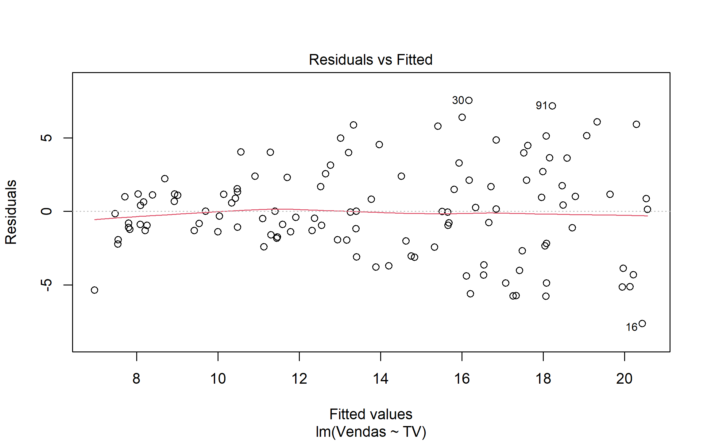
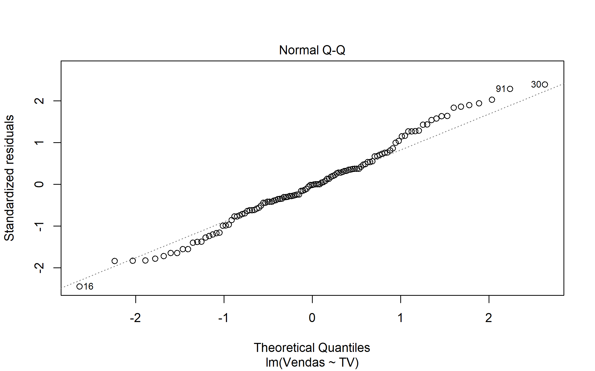
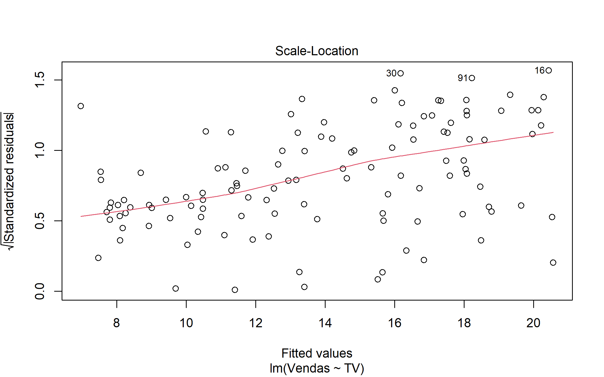
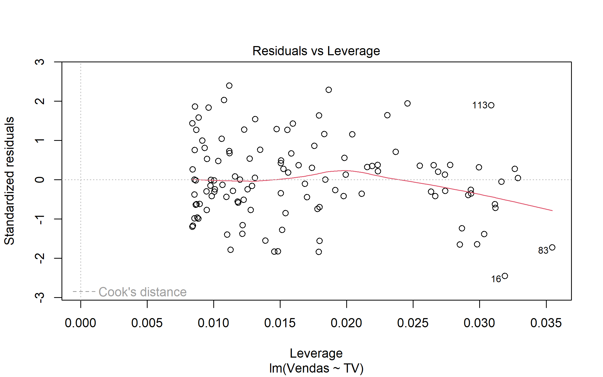
Verificando normalidade dos resíduos
shapiro.test(summary(mod1)$residuals)
Shapiro-Wilk normality test
data: summary(mod1)$residuals
W = 0.98867, p-value = 0.4293Análise do modelo 2
library(performance)
check_model(mod1)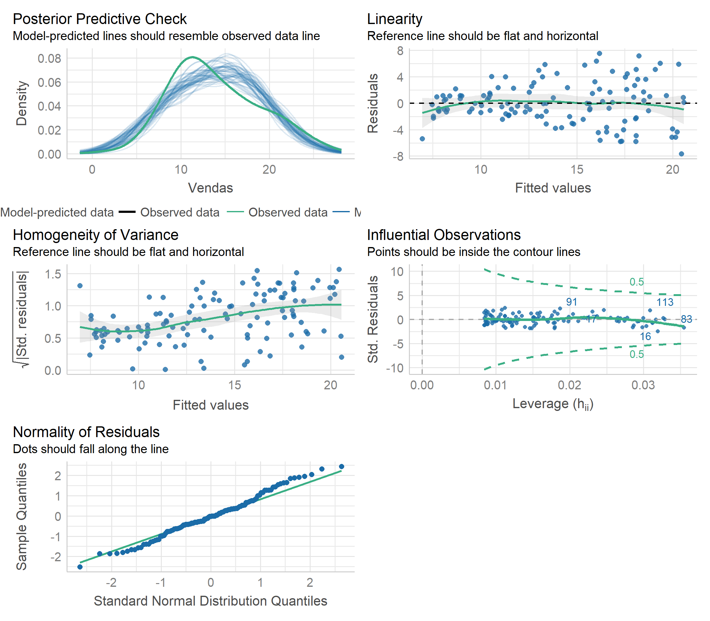
2o Modelo de Regressão
mod2 <- lm( Vendas ~ Radio, data = conj_treino)
coeflinear <- mod2$coefficients[1]
coefang <- mod2$coefficients[2]
summary(mod2)
Call:
lm(formula = Vendas ~ Radio, data = conj_treino)
Residuals:
Min 1Q Median 3Q Max
-16.396 -1.851 0.675 2.522 7.451
Coefficients:
Estimate Std. Error t value Pr(>|t|)
(Intercept) 9.22746 0.64377 14.333 < 2e-16 ***
Radio 0.22144 0.02515 8.806 1.38e-14 ***
---
Signif. codes: 0 '***' 0.001 '**' 0.01 '*' 0.05 '.' 0.1 ' ' 1
Residual standard error: 3.908 on 117 degrees of freedom
Multiple R-squared: 0.3986, Adjusted R-squared: 0.3935
F-statistic: 77.55 on 1 and 117 DF, p-value: 1.384e-14ggplot(propaganda, aes(x=Radio, y=Vendas)) +
geom_point() +
geom_abline(slope = coefang,intercept = coeflinear, color="blue" ) +
geom_hline(yintercept=coeflinear, linetype="dashed", color = "red")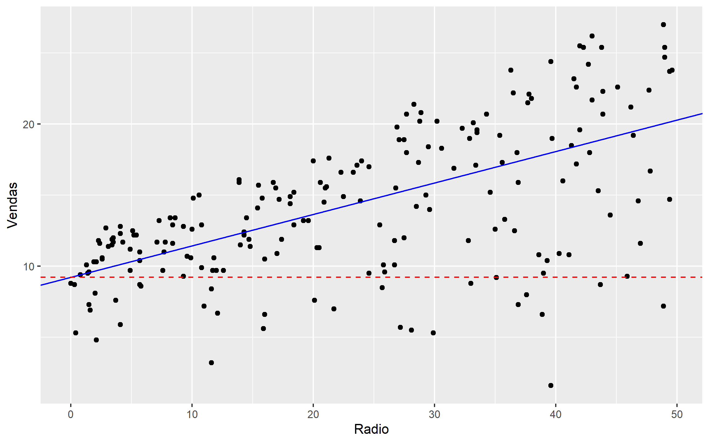
Outra forma de representação do 2o Modelo
scatterplot(Vendas ~ Radio, data = conj_treino, smooth=F, id.n=1)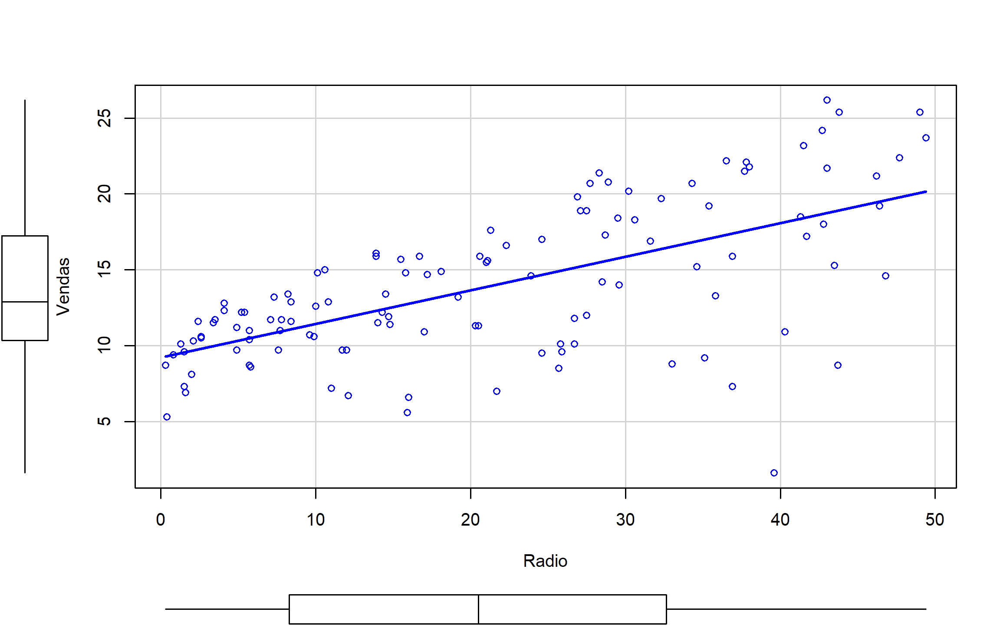
Calculando o erro padrão do resíduo com amostra de teste
sqrt(mean((conj_teste$Vendas - predict(mod2, conj_teste)) ^ 2)) [1] 4.808117Análise de Resíduos
check_model(mod2)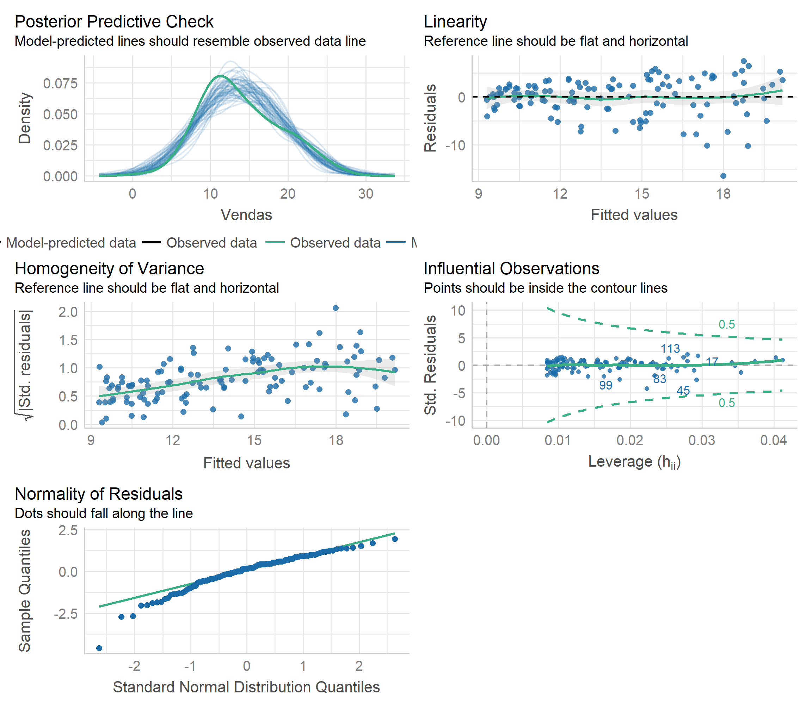
3o Modelo de Regressão
mod3 <- lm( Vendas ~ Jornal, data = conj_treino)
coeflinear <- mod3$coefficients[1]
coefang <- mod3$coefficients[2]
summary(mod3)
Call:
lm(formula = Vendas ~ Jornal, data = conj_treino)
Residuals:
Min 1Q Median 3Q Max
-11.0331 -3.2104 -0.8491 3.0389 13.0002
Coefficients:
Estimate Std. Error t value Pr(>|t|)
(Intercept) 12.08457 0.80845 14.948 < 2e-16 ***
Jornal 0.06305 0.02290 2.753 0.00685 **
---
Signif. codes: 0 '***' 0.001 '**' 0.01 '*' 0.05 '.' 0.1 ' ' 1
Residual standard error: 4.884 on 117 degrees of freedom
Multiple R-squared: 0.06084, Adjusted R-squared: 0.05281
F-statistic: 7.579 on 1 and 117 DF, p-value: 0.006847ggplot(propaganda, aes(x=Jornal, y=Vendas)) +
geom_point() +
geom_abline(slope = coefang,intercept = coeflinear, color="blue" ) +
geom_hline(yintercept=coeflinear, linetype="dashed", color = "red")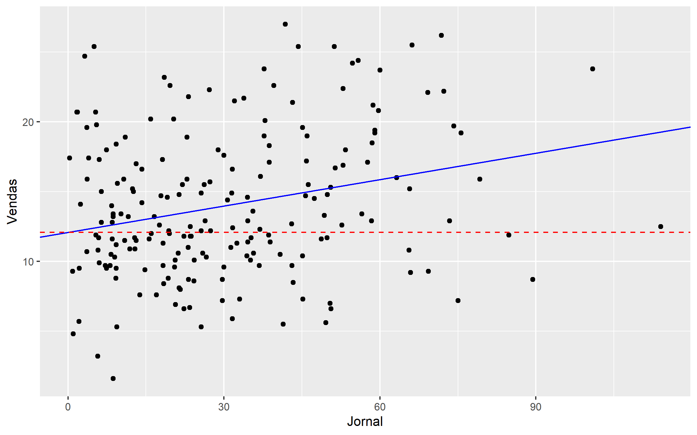
Outra forma de representação do 3o Modelo
scatterplot(Vendas ~ Jornal, data = conj_treino, smooth=F, id.n=1)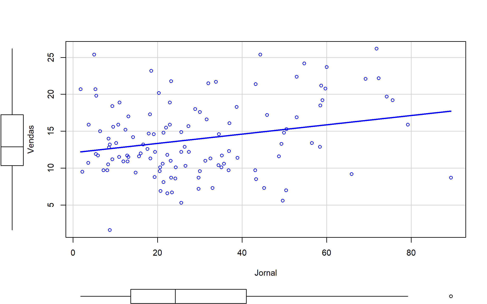
Calculando o erro padrão do resíduo com amostra de teste
sqrt(mean((conj_teste$Vendas - predict(mod3, conj_teste)) ^ 2)) [1] 5.38693Análise de Resíduos
check_model(mod3)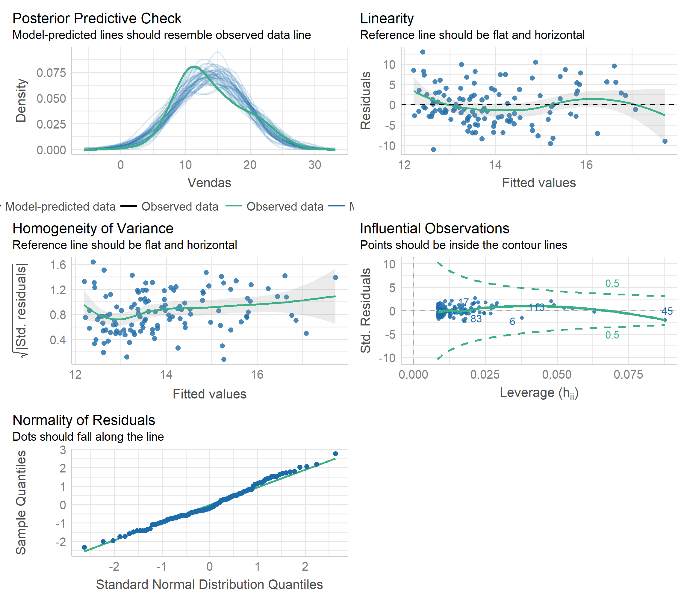